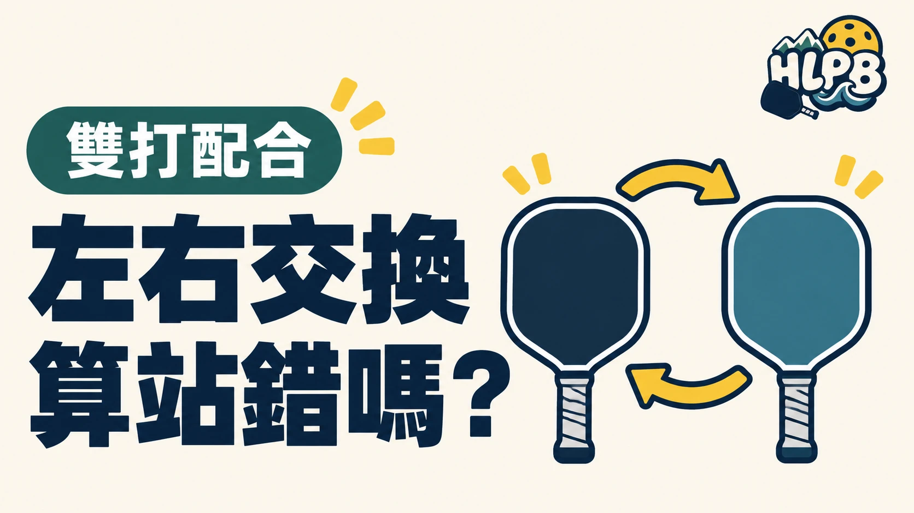

雙打在回合中調整左右位置，不等於發接發順序錯誤。要分清楚發球、接發球當下的正確球員，以及回合進行後的站位分工。
三個階段，各看不同問題
| 階段 | 優先核對 |
|---|---|
| 發球與接發球 | 球員順序、對應發球區及站位規定 |
| 回合進行中 | 左右分工、空間與相互移動 |
| 下一次發球前 | 重新確認發球員及接發球員 |
換到另一邊處理來球，不會因此自動更換下一次的發球順序。反過來說，發接發球站錯，也不能只用我們平常會換邊來解釋。這是兩種不同的檢查。
為什麼搭檔會調整左右？
回合中的站位會隨來球與兩人的分工改變。是否採取較固定的左右配置，應看彼此能否清楚記住發接發順序，以及移動後是否留下空檔；不能只模仿別隊的外觀。
剛開始學，先做哪一件事？
HLPB 建議先把發接發順序練熟，再加入位置調整。每次停球時確認下一球由誰開始，移動前和搭檔約好提醒方式。觀察重點是兩人能不能接上分工，而不是每一球都必須交換位置。
本文談同一側球場的左右調整，不是比賽換邊時走到球網另一端；後者應另看賽制及換邊規定。
延伸閱讀：匹克球雙打怎麼計分？0-0-2 與三個數字這樣看、雙打不是各顧半場：匹克球搭檔怎麼一起移動？。
資料來源：USA Pickleball 2026 規則書。
內容更新：2026-10-20｜資料來源：USA Pickleball 官方資料
返回文章列表